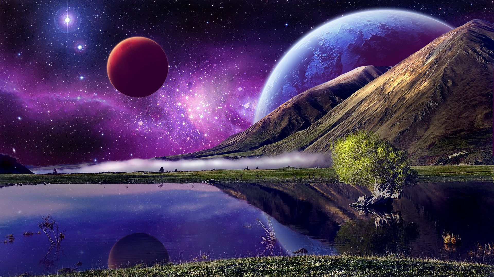
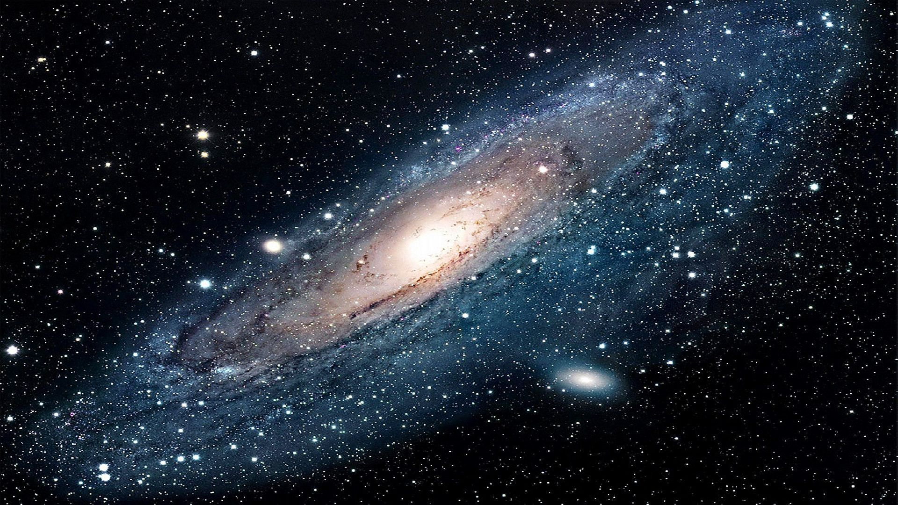
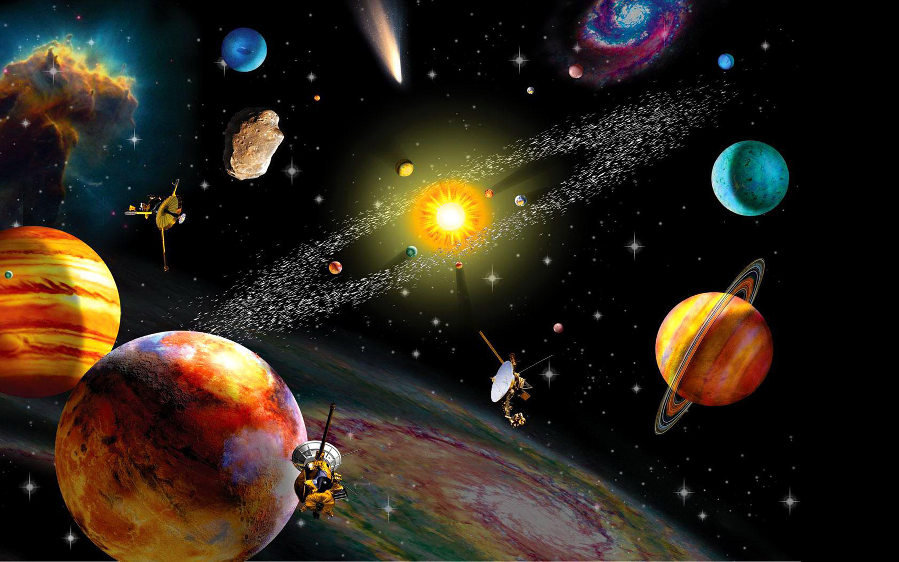

The Universe is all of space and time and their contents, including planets, stars, galaxies, and all other forms of matter and energy. While the spatial size of the entire Universe is unknown, it is possible to measure the size of the observable universe, which is currently estimated to be 93 billion light years in diameter. In various multiverse hypotheses, a universe is one of many causally disconnected constituent parts of a larger multiverse, which itself comprises all of space and time and its contents. The earliest scientific models of the Universe were developed by ancient Greek and Indian philosophers and were geocentric, placing Earth at the center of the Universe. Over the centuries, more precise astronomical observations led Nicolaus Copernicus to develop the heliocentric model with the Sun at the center of the Solar System. In developing the law of universal gravitation, Isaac Newton built upon Copernicus' work as well as observations by Tycho Brahe and Johannes Kepler's laws of planetary motion.
Further observational improvements led to the realization that the Sun is one of hundreds of billions of stars in the Milky Way, which is one of at least hundreds of billions of galaxies in the Universe. Many of the stars in our galaxy have planets. At the largest scale galaxies are distributed uniformly and the same in all directions, meaning that the Universe has neither an edge nor a center. At smaller scales, galaxies are distributed in clusters and superclusters which form immense filaments and voids in space, creating a vast foam-like structure. Discoveries in the early 20th century have suggested that the Universe had a beginning and that space has been expanding since then, and is currently still expanding at an increasing rate.